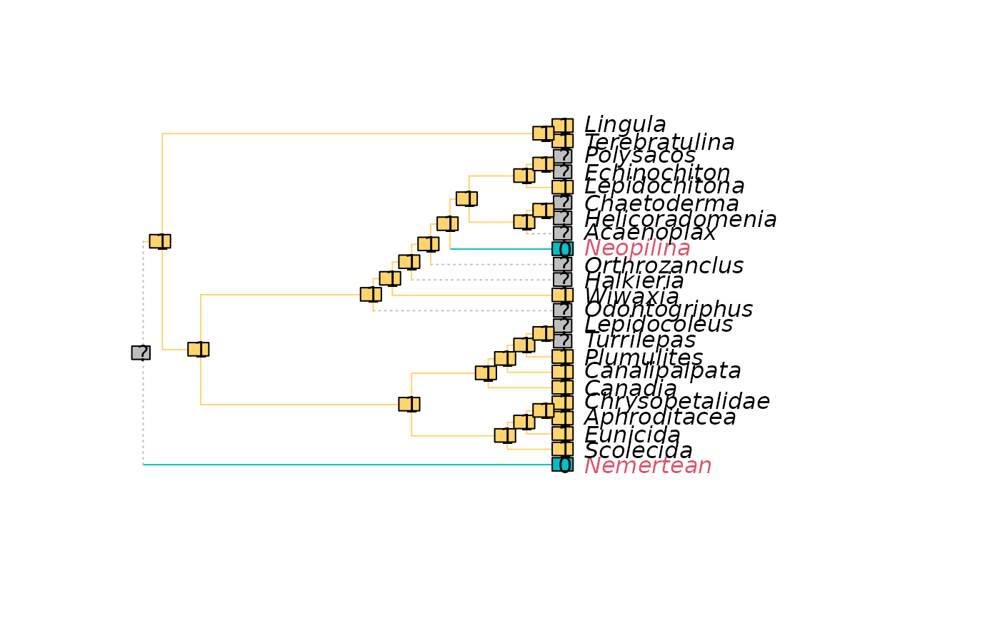

Would tree lengths change if a character was coded as ambiguous for each leaf (Pol and Escapa 2009) ?
LengthAdded(trees, char, concavity = Inf)
PolEscapa(trees, char, concavity = Inf)List of trees of class phylo, or multiPhylo object.
phyDat object containing a single character.
Determines the degree to which extra steps beyond the first
are penalized. Specify a numeric value to use implied weighting
(Goloboff 1993)
; concavity specifies k in
k / e + k. A value of 10 is recommended;
TNT sets a default of 3, but this is too low in some circumstances
(Goloboff et al. 2018; Smith 2019)
.
Better still explore the sensitivity of results under a range of
concavity values, e.g. k = 2 ^ (1:7).
Specify Inf to weight each additional step equally.
Specify "profile" to employ profile parsimony (Faith and Trueman 2001)
.
LengthAdded() returns a named numeric vector listing the mean
absolute change to tree length resulting if the character were coded
ambiguous for each leaf in turn, under the specified concavity constant.
High values for a leaf indicate that its coding contributes to instability ("wildcard" or "roguish" behaviour; see Roguefor further details). The coding is in tension with other data, which may indicate that the assumptions of homology that underlie the character's construction and scoring require careful scrutiny – or that the taxon in question has been subject to convergent evolution.
When inapplicable tokens are present in a character, the applicability of each coding is maintained: i.e. a leaf coded with an applicable token is never allowed to take an inapplicable value; and an inapplicable token remains inapplicable.
Faith DP, Trueman JWH (2001).
“Towards an inclusive philosophy for phylogenetic inference.”
Systematic Biology, 50(3), 331--350.
doi:10.1080/10635150118627
.
Goloboff PA (1993).
“Estimating character weights during tree search.”
Cladistics, 9(1), 83--91.
doi:10.1111/j.1096-0031.1993.tb00209.x
.
Goloboff PA, Torres A, Arias JS (2018).
“Weighted parsimony outperforms other methods of phylogenetic inference under models appropriate for morphology.”
Cladistics, 34(4), 407--437.
doi:10.1111/cla.12205
.
Pol D, Escapa IH (2009).
“Unstable taxa in cladistic analysis: identification and the assessment of relevant characters.”
Cladistics, 25(5), 515--527.
doi:10.1111/j.1096-0031.2009.00258.x
.
Smith MR (2019).
“Bayesian and parsimony approaches reconstruct informative trees from simulated morphological datasets.”
Biology Letters, 15(2), 20180632.
doi:10.1098/rsbl.2018.0632
.
Other tree scoring:
CharacterLength(),
IWScore(),
MinimumLength(),
MorphyTreeLength()
trees <- inapplicable.trees[["Vinther2008"]]
dataset <- inapplicable.phyData[["Vinther2008"]]
char <- dataset[, 11]
added <- LengthAdded(trees, char)
PlotCharacter(
tree = trees[[1]],
dataset = char,
tip.color = 1 + added[trees[[1]]$tip.label] # Colour by added steps
) -> XX # Suppress return value; display plot only
